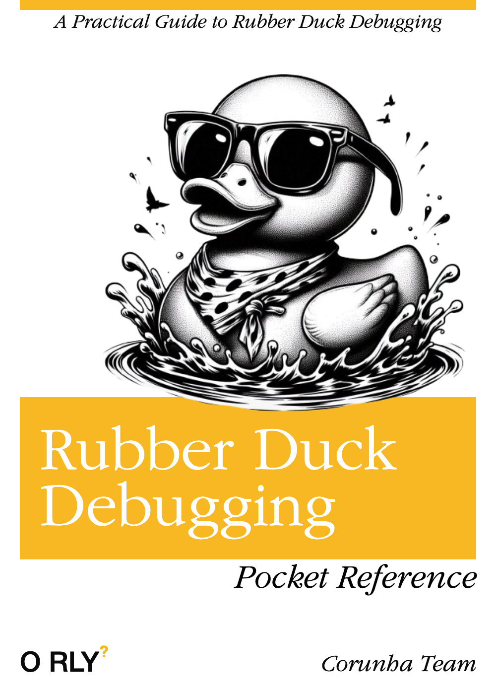

Welcome to Rubber Duck Debugging, a super simple
Pocket Reference to understand an ancient technique.
Welcome to the Rubber Duck Debugging - Pocket Reference

Is your code in distress? Fear not, for the Rubber Duck is here to save the day!
Discover the secret weapon of countless developers: Rubber Duck Debugging. Let's dive into the world of code clarity, one quack at a time.
Join us on an epic journey to code enlightenment. With a little patience and a lot of quacking, you'll conquer any coding challenge.
In a Not-So-Far-Away Code Dungeon
In the heart of Sensormatic's (formerly Creativesystems) bustling Porto office, where the air was as fickle as a mischievous sprite, cycling between arctic chill and infernal heat, a curious ritual had taken hold among its developers, both young and old. Amidst the hum of overworked computers and the scent of freshly brewed elixir, a peculiar practice known as "Rubber Duck Debugging" had emerged.
In the Beginning
At the heart of our tale was Joãozinho, a young developer venturing into the labyrinthine world of code and algorithms. His mission? To guide RFID tags to their rightful places—the backstore, the shop floor, or perhaps the watchful eye of a door alarm. But as many brave adventurers before him, Joãozinho would soon face the dreaded challenge of the elusive bug.
Like a knight at a crossroads, Joãozinho pondered his path. Should he seek immediate aid for every minor obstacle, or should he strive for self-reliance and hone his problem-solving skills?
Then, a memory surfaced, a tale whispered by an old developer. In the ancient days before the dawn of Stack Overflow, developers turned to a peculiar ally: the rubber duck. Armed with curiosity and a modest yellow companion (gifted by an older more experienced colleage), they would patiently explain their code to the unassuming duck, often leading to epiphanies.
Inspired by this legend, Joãozinho embarked on a quest for knowledge and self-improvement, his trusty rubber duck ever by his side.
The Journey
The ritual was simple, yet oddly comforting. Joãozinho would settle at his desk, his rubber duck perched like a wise oracle on the monitor. Then, he would begin to unravel the tangled web of code, explaining each variable, function, and loop in the clearest terms. The duck, with its unwavering gaze, listened patiently as Joãozinho poured out his thoughts.
To Joãozinho's surprise, this seemingly absurd practice proved remarkably effective. As he articulated his code, hidden errors and logical flaws would emerge from the shadows. The rubber duck, a silent confidant, became an invaluable tool in Joãozinho's debugging arsenal, a beacon of clarity in the murky waters of code.
Of course, such an unusual practice couldn't escape the notice of Joãozinho's colleagues. As they passed by his desk, they would often pause, a mixture of amusement and curiosity etched on their faces. Yet, these moments of levity only strengthened the sense of camaraderie within the office. Inspired by Joãozinho's unconventional approach, more and more developers began to adopt rubber duck debugging, filling the workspace with a colorful menagerie of feathered companions.
Rubber Duck Debugging transcended its humble origins as a mere debugging technique. It became a philosophy, a testament to the power of patience, persistence, and unconventional thinking. Joãozinho, once a novice developer, grew in skill and confidence, his trusty rubber duck always by his side, a symbol of his journey from novice to master.
And so, the legend of Rubber Duck Debugging lives on in the annals of Sensormatic (aka Creativesystems). A testament to the power of simplicity and self-reflection, it reminds us all that even the most complex problems can be solved with a little patience and a willing listener, be it human or duck.
Why this Rubber Duck Debugging: Pocket Reference?
In our age of rapid technological advancement, where information is a mere click away and AI promises to solve our problems, it's easy to overlook the simple, yet powerful tools of the past. One such tool is Rubber Duck Debugging.
While the allure of cutting-edge technology is undeniable, it's essential to remember the timeless wisdom of our predecessors. Rubber Duck Debugging, once a common practice among developers, offers a unique approach to problem-solving that can still be incredibly effective today.
By explaining your code, step-by-step, to an inanimate object, you force yourself to articulate your thought process clearly and identify logical inconsistencies. This simple act can often lead to breakthroughs and innovative solutions.
This pocket guide aims to preserve the legacy of Rubber Duck Debugging and encourage its adoption by a new generation of developers. By sharing the stories and techniques of seasoned programmers, we hope to inspire you to embrace this timeless practice and reap its benefits.
Remember, sometimes the simplest solutions are the most effective. So, the next time you encounter a stubborn bug, don't hesitate to turn to your trusty rubber duck.
Rubber Duck Debugging: The Hidden Tool
Rubber duck debugging is a simple yet effective problem-solving technique. You explain your code, line by line, to a rubber duck (or any inanimate object but the duck seems to be the more effective one). The act of verbalizing your thought process often reveals logical errors, misunderstandings, and potential solutions.
The Pocket Reference
Here's a concise guide to help you get the most out of rubber duck debugging:
1. Choose Your Duck
Physical Duck: A classic choice. Its rubbery, non-judgmental gaze that can be surprisingly comforting.
Virtual Duck: Use a video call with a friend or colleague, or even a voice assistant. Even non-tech users that won't understand anything you say could serve for the task.
Imaginary Duck: Don't have a ducK? Nobody wants to answer your calls? Don't panic, simply visualize a duck in your mind and talk to it.
An AI Duck: You can try to talk with an AI, it may surprise you with the results. But check them well, as they may provide not so good solutions.
2. Prepare Your Code
Identify the Problem: Clearly define what isn't working.
Isolate the Issue: Narrow down the problem to a specific section of code.
Review Relevant Documentation: Consult official documentation or tutorials. You may be surprised as sometimes the oficial documentation can provide the solution to your problems.
3. Explain Your Code Aloud:
Step-by-Step: Break down your code into smaller, manageable chunks. They are easy to manage and understand.
Verbalize Your Logic: Explain the purpose of each line and variable.
Ask Questions: Pose questions to yourself, such as "Why is this happening?" or "What would happen if I did this instead?"
4. Listen Actively:
Pay Attention: Focus on your own explanation.
Identify Inconsistencies: Listen for contradictions or illogical statements.
Consider Alternative Approaches: Explore different ways to solve the problem. Remember what Einstein used to say "We can't solve problems by using the same kind of thinking we used when we created them".
5. Debug and Test:
Implement Changes: Make adjustments based on your insights. Don't be afraid to implement changes you can always come bck to the previous commit.
Test Thoroughly: Run your code to verify the fix. And test very carefully, use the debugger it's a tool that works great alongside your rubber duck.
Iterate: If necessary, repeat the process until the issue is resolved.
Additional Tips:
Take Breaks: Step away from the code to clear your mind.
Change Your Environment: A different setting can spark new ideas.
Collaborate with Others: Pair programming or code reviews can provide fresh perspectives.
Learn from Mistakes: Analyse your errors to avoid them in the future.
How you will improve?
Clarify your thinking: By explaining your code out loud, you force yourself to break down complex problems into smaller, more manageable steps.
Identify logical errors: Verbalizing your code can help you spot inconsistencies and mistakes that might have otherwise gone unnoticed.
Gain a fresh perspective: Explaining your code to an inanimate object can help you see your problem from a different angle.
Boost your confidence: Successfully debugging a problem can increase your self-esteem and problem-solving skills.
So, the next time you're stuck on a coding problem, don't hesitate to grab a rubber duck and start talking!
Bonuspack: Another useful resource for your arsenal
Git is probably one of those tools on your arsenal, so here you have the entire Pro Git book, written by Scott Chacon and Ben Straub.
Bonuspack 2: Music didn't hurt anyone!
🎄 A final message for the holidays 🎄
As the year comes to a close, We want to take a moment to celebrate everything we've accomplished together. Innovation and progress don't happen in isolation, they're the result of teamwork, collaboration, and a culture of sharing knowledge.
This year, you've exemplified what it means to work as one team, combining talents, ideas, and perspectives to create solutions that truly make a difference. Your dedication to learning from each other and growing together is what drives us forward and it's what will keep us shaping the future.
Thank you for your hard work, your creativity, and the support you show one another every day. Let's take pride in what we've built and look forward to another year of success and discovery.
Wishing you and your loved ones a joyful holiday season and a bright start to the New Year! 🎉
Warmest regards, Corunha Team
Spread the word!
You can share this knowledge with anyone you want, so go on and inspire others. Feel free to use this QR Code to do it!